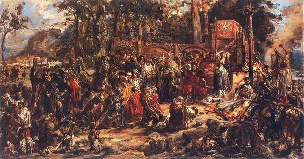

Заснування та Княжий Львів
Перша письмова згадка про місто датується 1256 роком. Дізнайтеся, як король Данило Галицький будував місто для свого сина Лева...
Читати далі →Як Львів ставав культурною столицею крізь століття

Перша письмова згадка про місто датується 1256 роком. Дізнайтеся, як король Данило Галицький будував місто для свого сина Лева...
Читати далі →
Це історія про те, як Русь виживала між монгольською ордою та хрестоносцями, зберігаючи свою культуру та віру протягом двох століть.
Читати далі →
Період під владою Габсбургів: поява кав'ярень, електричного трамвая та зведення величного театру Опери та Балету...
Читати далі →